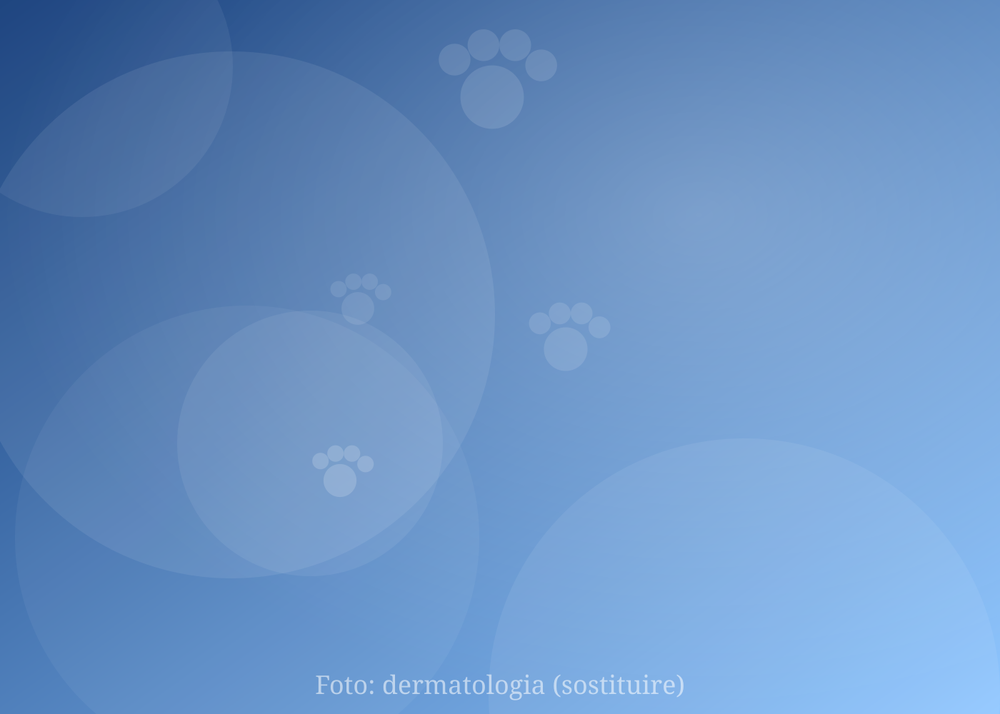

La pelle parla.
Gli organi sussurrano.
Io ascolto entrambi.
Sono Elisa Marzaro, medico veterinario. Mi occupo di cani e gatti con problemi di pelle, orecchie e malattie interne che non si risolvono al primo tentativo. Una visita approfondita, esami in sede e un piano chiaro da portare a casa.
Una veterinaria che fa domande prima di dare risposte.
Mi sono laureata in Medicina Veterinaria all’Alma Mater Studiorum di Bologna e ho lavorato in diverse strutture del Veneto, tra pronto soccorso, laboratorio, diagnostica per immagini e sala operatoria. Questa esperienza “a tutto tondo” è il motivo per cui oggi mi dedico a due discipline che richiedono soprattutto metodo: la dermatologia e la medicina interna.
Il mio lavoro inizia dall’ascolto del proprietario. Nelle malattie della pelle e in quelle interne i sintomi si ripetono e si confondono: lo stesso prurito può essere un parassita, un’allergia o una malattia endocrina. Per questo dedico alla prima visita tutto il tempo che serve e preferisco pochi esami mirati a tanti esami inutili.
La formazione in anestesia mi permette inoltre di gestire in sicurezza anche i pazienti fragili, anziani o con malattie concomitanti, quando sono necessarie procedure diagnostiche in sedazione.
Due discipline, un solo metodo.
Pelle, orecchie e organi interni si influenzano a vicenda. Vederli insieme, nella stessa visita, evita diagnosi a metà.

Prurito, lesioni, orecchie e pelo.
Dermatite atopica, allergie alimentari, otiti ricorrenti, infezioni della cute, alopecie, malattie autoimmuni. Citologia e raschiati in sede, diete privative guidate, immunoterapia.
Scopri la dermatologiaQuando i sintomi sono vaghi e persistenti.
Vomito e diarrea cronici, dimagrimento, sete eccessiva, stanchezza, febbre di origine sconosciuta. Malattie renali, epatiche, endocrine e gastrointestinali: diagnosi ragionata e terapie seguite nel tempo.
Scopri la medicina internaSegnali da non ignorare.
Sono i motivi di visita che vedo più spesso arrivare tardi. Se riconoscete uno di questi segnali nel vostro cane o gatto, vale la pena parlarne: una diagnosi precoce cambia il percorso.
Dermatologia
- Prurito che dura da più di 3 settimaneSi gratta, si lecca le zampe, si strofina il muso. Soprattutto se peggiora in certe stagioni.
- Otite che “torna sempre”Due o più otiti in un anno sono quasi sempre il sintomo di un problema allergico o endocrino.
- Perdita di pelo a chiazze o simmetricaAlopecia senza prurito: può indicare una malattia ormonale, non solo un problema di pelle.
- Croste, pustole, odore sgradevoleSegni di infezione batterica o da lieviti che va identificata al microscopio prima di trattare.
- Lesioni che non guariscono con la terapiaDopo due cicli di antibiotico senza risultato serve un approfondimento, non un terzo ciclo.
Medicina interna
- Beve e urina più del solitoReni, diabete, Cushing, ipertiroidismo del gatto: tutte malattie che si curano meglio se scoperte presto.
- Dimagrimento con appetito normale o aumentatoUn segnale classico di malattia endocrina o intestinale, facile da sottovalutare nel gatto.
- Vomito o diarrea che vanno e vengonoPiù di 3 settimane di sintomi intermittenti meritano un percorso diagnostico, non solo una dieta.
- Stanchezza, pelo opaco, meno voglia di giocareNel paziente anziano spesso non è “l’età”: ipertensione e anemia si misurano in pochi minuti.
- Febbre o inappetenza senza causa evidenteRichiedono un ragionamento clinico ordinato, per evitare terapie alla cieca.
Un’avvertenza importante: difficoltà respiratorie, incapacità a urinare, vomito continuo, convulsioni o collasso sono emergenze. In questi casi recatevi subito al pronto soccorso veterinario più vicino.
Il percorso della visita, passo per passo.
Sapere cosa aspettarsi riduce lo stress di proprietario e animale. Ecco come si svolge una visita specialistica.
Prenotazione e questionario
Al momento della prenotazione raccolgo i primi dati e vi indico cosa portare e se sospendere qualche terapia prima della visita.
Storia clinica e visita
Ascolto la vostra descrizione, visito l’animale con calma e spiego cosa sto osservando e perché.
Esami in sede
Citologia, raschiati, otoscopia, esami del sangue e delle urine, ecografia: quasi sempre nella stessa seduta.
Piano e follow-up
Uscite con un referto scritto e un piano terapeutico chiaro. I controlli successivi sono programmati insieme.
Spiegato con calma, in tre immagini.
Brevi episodi su dermatologia e medicina interna, pensati per chi vive con un cane o un gatto. Premete play: le foto si animano e raccontano.
Le risposte che cercano i proprietari.
Se la vostra domanda non è qui, scrivetemi: rispondo volentieri prima della visita.
Fai una domanda su WhatsAppServe una richiesta del veterinario curante per una visita specialistica?
No. Potete prenotare direttamente una visita dermatologica o di medicina interna. Se il vostro veterinario curante vi ha già seguito, portate referti ed esami precedenti: lavoro volentieri in collaborazione con i colleghi e condivido con loro il referto.
Quanto dura una visita specialistica?
Una prima visita dura in media 40–60 minuti. Gran parte del tempo è dedicata alla raccolta della storia clinica, che in dermatologia e in medicina interna è spesso la chiave della diagnosi. Gli esami di base (citologia, raschiati, esame delle urine) si eseguono in sede durante la visita.
Cosa devo portare alla prima visita?
Referti ed esami precedenti, l’elenco dei farmaci e degli alimenti usati (anche quelli che non hanno funzionato), foto delle lesioni quando erano al massimo e, se possibile, un breve diario dei sintomi. Il cane va tenuto al guinzaglio e il gatto nel trasportino.
Il mio cane si gratta: posso sospendere il cortisone prima della visita?
Non sospendete alcun farmaco di vostra iniziativa. Al momento della prenotazione vi indicherò se e quando sospendere terapie che possono interferire con gli esami, per esempio prima di un test allergologico o di una citologia.
Trattate anche conigli, furetti o animali esotici?
L’attività è dedicata a cani e gatti. Per altre specie vi indicherò volentieri un collega di riferimento.
Seguite i pazienti anche a distanza?
Dopo la prima visita in presenza, i controlli di follow-up possono essere organizzati anche in teleconsulto, quando clinicamente appropriato, con invio di foto e aggiornamenti. La prima valutazione richiede sempre la visita diretta dell’animale.
Come si prenota?
Telefono, WhatsApp o modulo di contatto in questa pagina. Rispondo di norma entro un giorno lavorativo. Per urgenze dermatologiche o internistiche segnalatelo nel messaggio: cerco di anticipare l’appuntamento.
Prenotare è semplice. Scegliete il canale che preferite.
Rispondo di norma entro un giorno lavorativo. Per i casi urgenti segnalatelo nel messaggio.
Mappa della sede
Inserire qui l’iframe di Google Maps (vedi README).